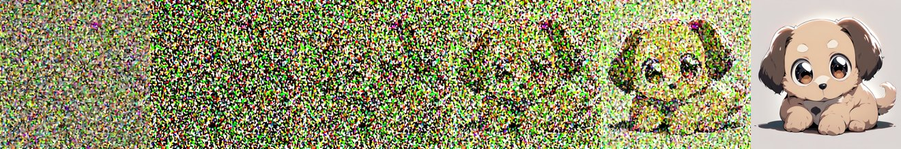
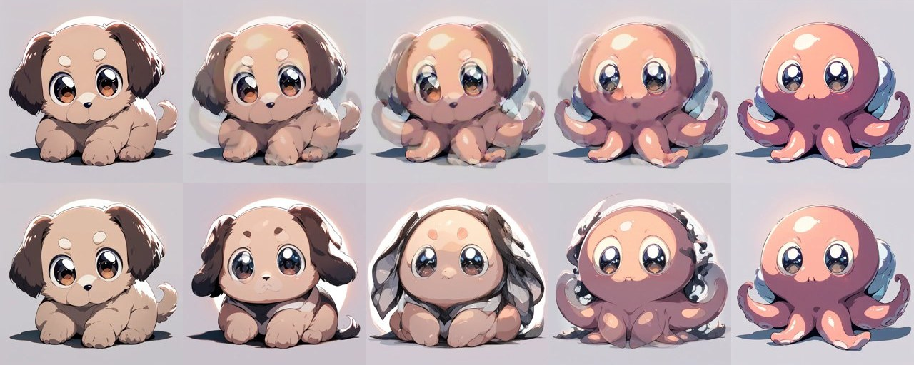
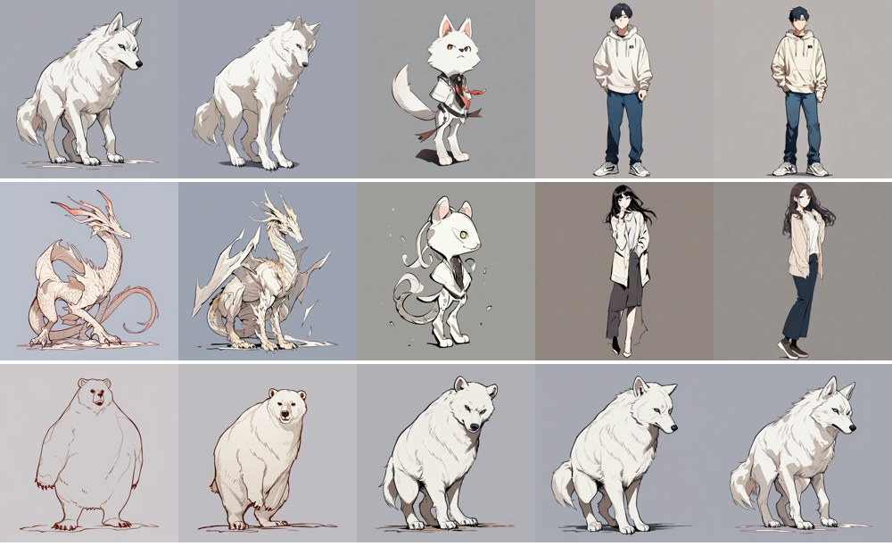
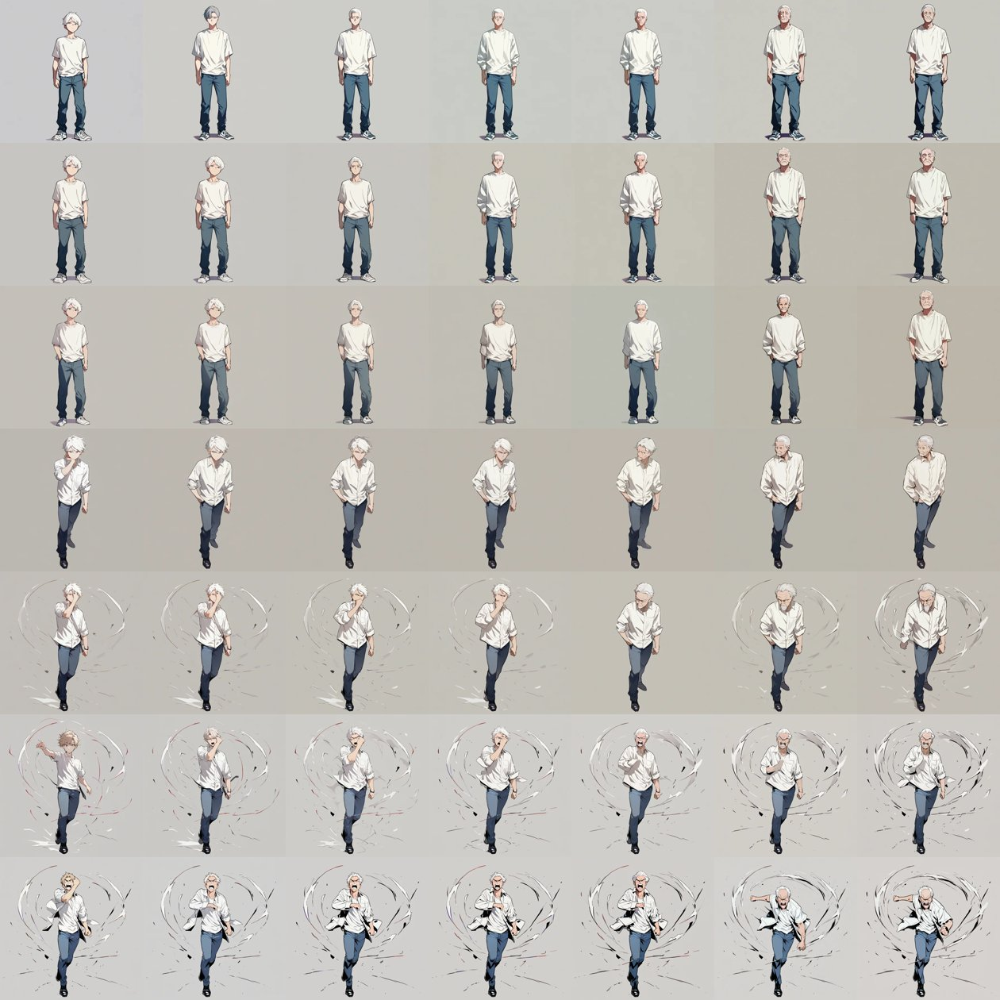
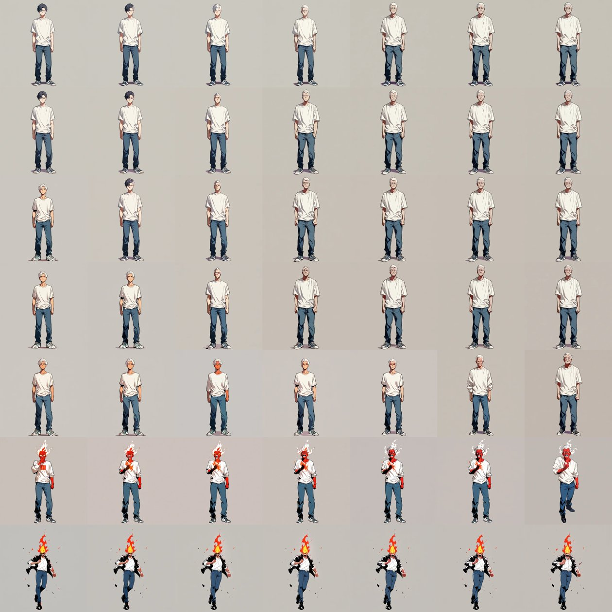
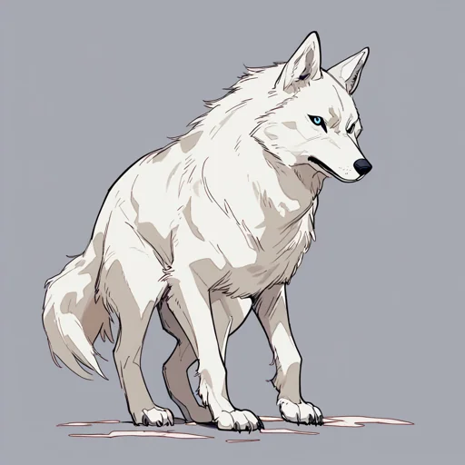

画像生成AIは、どうやって「中間の姿」を描いているのか
このサイトでは、2つ（または4つ）の生き物を混ぜた「中間の姿」を眺められます。ここでは、その裏で動いている画像生成AIの一般的な仕組みを、このサイトで実際に作った画像を例に説明します。
1. 絵ができるまでの流れ
このサイトで使った画像生成AI（拡散モデルと呼ばれる種類）は、大きく分けて次の順番で絵を描きます。
ポイントは、AIが絵をいきなり描くのではなく、ノイズ（砂嵐のような乱れ）から少しずつ整えていくことと、その方向づけに言葉をベクトルにしたものを使うことです。
2. 言葉はベクトル（数の並び）になる
AIは言葉をそのまま理解しているわけではありません。テキストエンコーダが、言葉を数千個の数が並んだもの（ベクトル）に変換します。ベクトルは「巨大な空間の中の1点」と考えることができます。
学習の結果、意味の近い言葉は近い場所に、遠い言葉は遠い場所に置かれます。例えば「狼」と「熊」は近く、「狼」と「青年」は遠くなります。
このサイトの「中間の姿」は、2つの言葉のベクトルを割合を変えて足し合わせた点（例：狼70%＋青年30%）をAIに渡して描かせたものです。
3. ノイズから少しずつ描く
拡散モデルは、学習のときに「きれいな絵に少しずつノイズを足していき、それを元に戻す」練習をしています。描くときはその逆で、完全なノイズから出発し、言葉のベクトルを手がかりに、ノイズを少しずつ取り除いて絵にしていきます。

出発点のノイズはシードという数で決まります。同じ言葉・同じシード・同じ手順なら、毎回同じ絵になります。シードを変えると、ポーズや構図が変わります。
4. どこで混ぜるか：案Cと案A
このサイトでは、2つの生き物を「どの段階で混ぜるか」が違う2つの方式を見比べられます。
案C：描く前に混ぜる
言葉のベクトル（と出発点のノイズ）を混ぜてから、AIに一から描き直させます。AIが「混ざった指示」を解釈して描くので、中間でも1匹の生き物として描かれます。重い計算なので、画像は事前にPCで作っておきます。
案A：描き終わった絵を混ぜる
完成した2枚の絵の圧縮データ（latent）を混ぜて、デコーダで画像に戻します。描き直しはしないので、2枚が透けて重なったような見え方になります。軽い計算なので、ブラウザの中でその場で計算しています。

同じ「中間」でも、意味（言葉）で混ぜるか、見た目（絵のデータ）で混ぜるかで、結果が大きく変わります。
5. 遠い組み合わせほど「謎の姿」になる
ベクトルの近い組み合わせ（熊↔狼）は、中間でもどちらかの動物らしい姿を保ち、なめらかに変わります。遠い組み合わせ（狼↔青年）は、中間でどちらでもない姿（このモデルでは小さな獣人のようなキャラ）になります。

実際に、このサイトで使った言葉のベクトルどうしの距離を測ると、次のようになりました（数字が大きいほど遠い）。
| 組み合わせ | 距離 | 中間の姿 |
|---|---|---|
| 狼 × 熊 | 0.016 | なめらかに変わる |
| 熊 × ドラゴン | 0.019 | なめらかに変わる |
| 青年 × 女性 | 0.365 | — |
| 人 × 動物（6組） | 0.41〜0.43 | どれも似た「謎のキャラ」 |
距離は「1−コサイン類似度」で、プロンプト全体のベクトルを比べたものです。この測り方はプロンプトの長さや語順の違いにも影響されるので、目安として見てください。
中間で何が描かれるかは、ベクトルの置かれ方と、そのモデルが学習で何を多く見てきたかの両方で決まります。このモデルはアニメのキャラクターを中心に学習しているため、あいまいな場所ではアニメキャラとして描きやすいと考えられます。また、直線で結んだ中間が「意味の上での中間（半分人・半分狼）」になる保証は、どのモデルにもありません。
6. そろえると、変化が見やすくなる
変化を見やすくするには、違いを1か所に絞るのが効果的です。「年齢×性格」のページでは、4人の言葉の形・服装・シードをすべてそろえ、「若い／年配」「クール／熱血」の言葉だけを変えました。

7. 言葉は文字どおりに描かれる
最初、熱血を表すために「hot-blooded（熱血）」「fiery eyes（燃えるような目）」と書いたところ、AIは本当に頭が燃えているキャラを描きました。言葉の比喩的な意味ではなく、学習した絵と結びついた見た目として解釈されるためです。

8. LLM（文章のAI）との共通点と違い
ChatGPTやClaudeのような文章を扱うAI（大規模言語モデル、LLM）も、言葉をベクトルにして扱う点は同じです。ここでは一般的な仕組みとして整理します。
共通点
- 言葉をベクトルにする：LLMも文章を「トークン」という単位に区切り、それぞれを数百〜数千次元のベクトルに変換してから処理します。画像生成のテキストエンコーダも、LLMと同じ「Transformer」という仕組みでできています。
- 意味の近さが距離になる：意味が似た言葉ほど、ベクトル空間で近くに置かれる傾向があります。
- 置き方はモデルしだい：どの言葉をどこに置くかは学習で決まるので、モデルが違えば配置も変わります。
違い
- ベクトルの使い道：画像生成では、ベクトルは「何を描くか」の指示で、絵そのものはノイズから描く部分が作ります。LLMは、ベクトルを何層もの計算で処理して、次に来るトークンを1つずつ予測し、文章を組み立てます。
- 文脈で変わる：LLMの内部では、同じ単語でも前後の文脈によってベクトルが変わっていきます。「1つの言葉＝1つの点」と言えるのは、入口の部分（埋め込み）までです。
- 混ぜた結果の見え方：画像では、ベクトルの中間を「中間の絵」として目で見られます。LLMで2つの単語のベクトルを混ぜても、なめらかな「中間の文章」になるとは限らず、このサイトのように目で確かめるのは難しいです。
この節は一般的な説明です。このサイトで実際に計測・確認したのは、画像生成モデル（Animagine XL 4.0）のテキストエンコーダの距離までです。
9. このサイトの作り方と注意点
- 使ったモデル：Animagine XL 4.0（SDXL系、ライセンス：CreativeML Open RAIL++-M）、SD-Turbo（「ダークファンタジー」スタイル）。
- 事前生成（案C）：PCのGPU（GeForce RTX 2070 SUPER）で、1枚あたり約19秒（1024px・28回）。表示は512pxに縮小しています。
- ブラウザでの計算（案A）：TAESD / TAESDXL（軽量デコーダ、MIT）をONNX形式に変換し、ONNX Runtime Web（WebGPU）で動かしています。
- 中間の作り方：言葉のベクトルは割合で足し合わせ、出発点のノイズはシードが違う場合に球面補間（slerp）で混ぜています。毎回同じ結果になるよう、ランダム性のない手順（Euler）で描いています。
- 中間の姿の崩れや奇妙さも含めて楽しむ技術デモです。
試してみる：狼 → 青年
スライダーを動かすと、事前に描いた16枚の中間を順に表示します（「ひと・けもの・竜」と同じ画像です）。

狼 100% ／ 青年 0%